Portfolio

A fake apple. Was cut in half, painted, and had magnets added so it could split onstage.
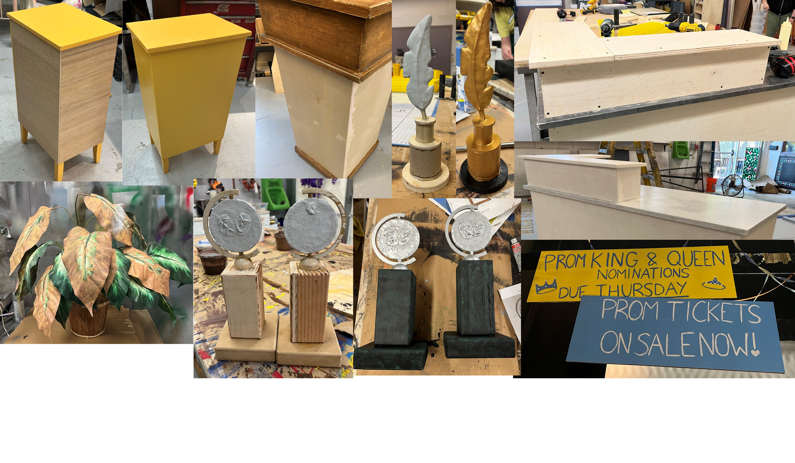
Props created for The Prom. Assorted materials.
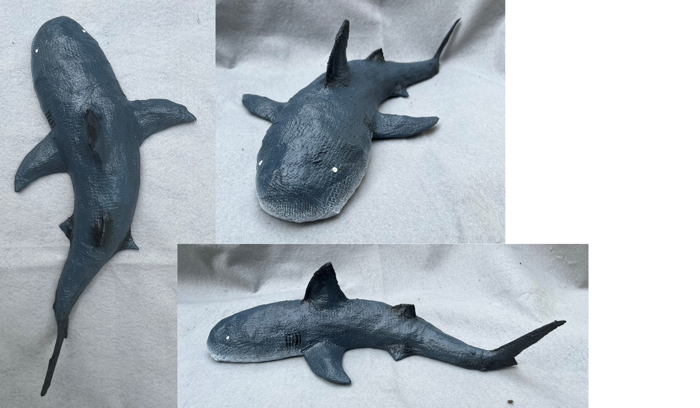
A shark created from cardboard, paper mache, and paint.
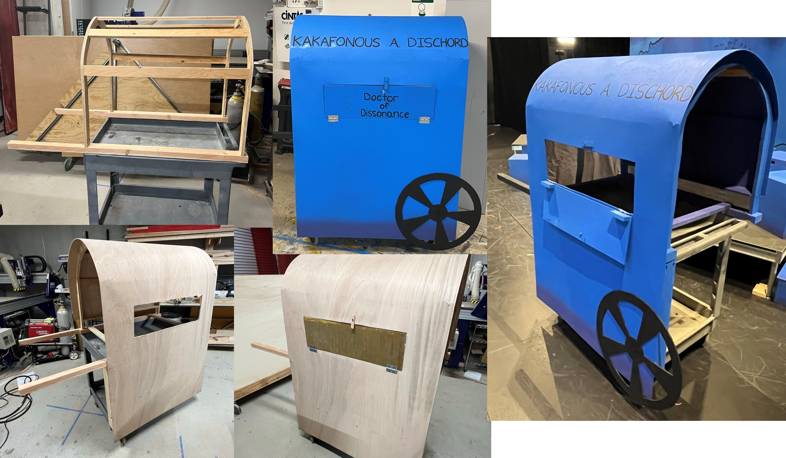
A wagon created for The Phantom Tollbooth. Made of wood and a lunch cart.
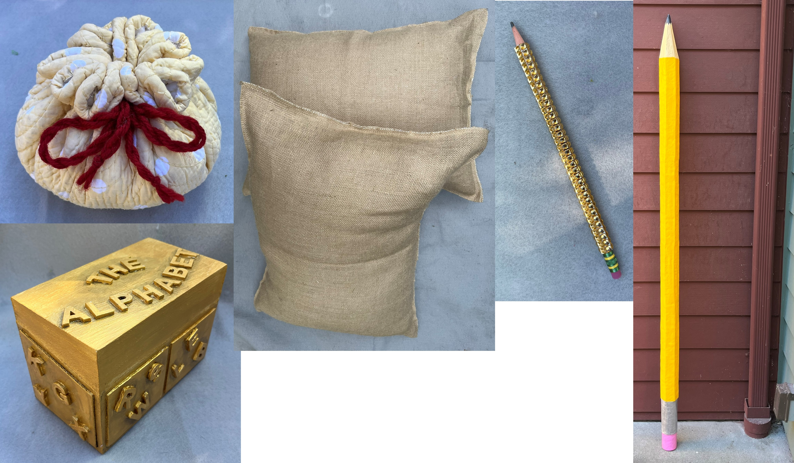
Assorted props made for The Phantom Tollbooth
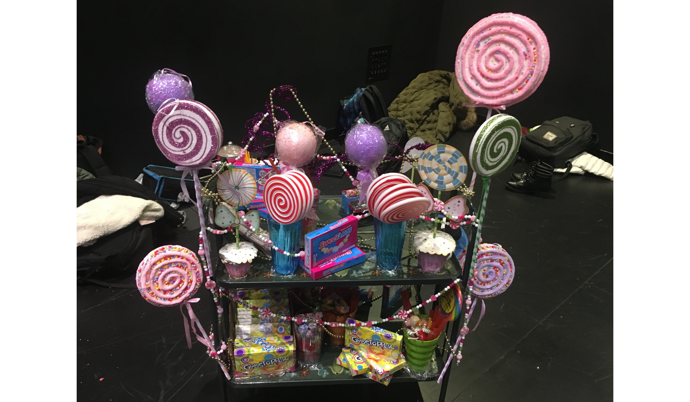
A candy cart created for Charlie and the Chocolate Factory.
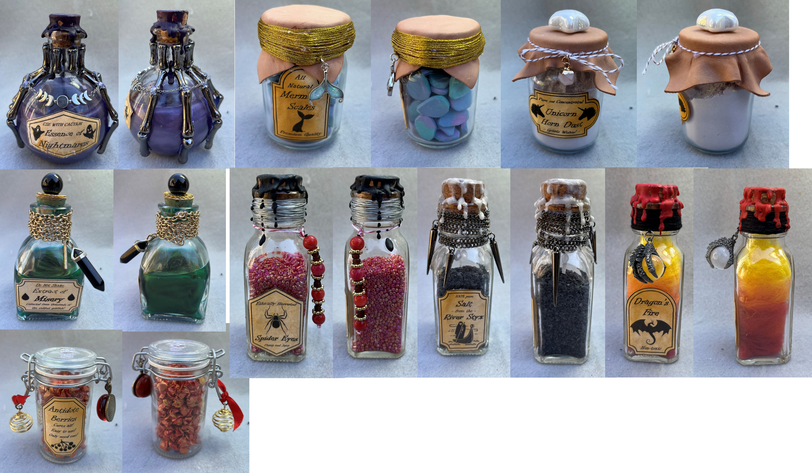
Fake potion bottles created using various materials.
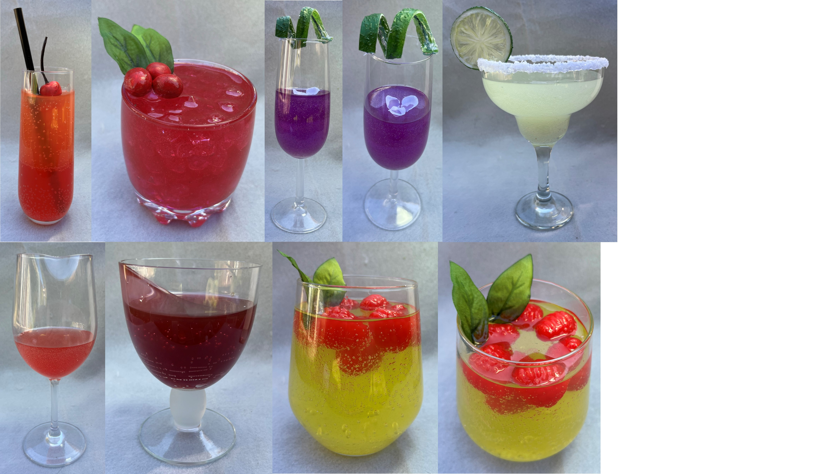
Fake drinks created using gel wax and other materials.
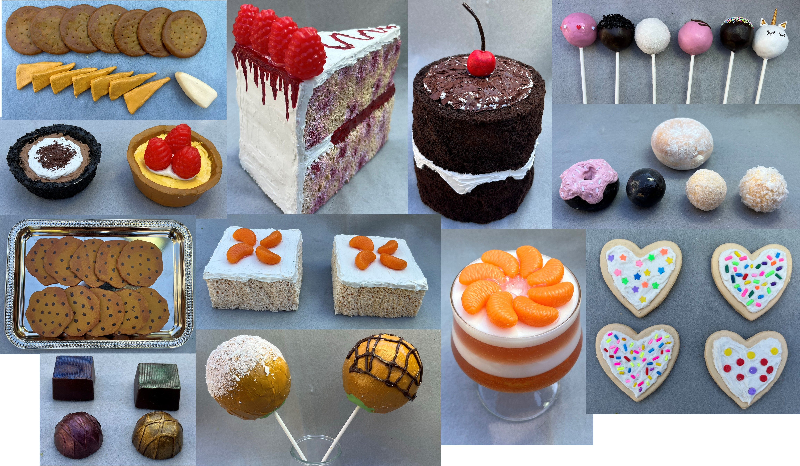
Foods created from various materials including clay, paint, and sponges.
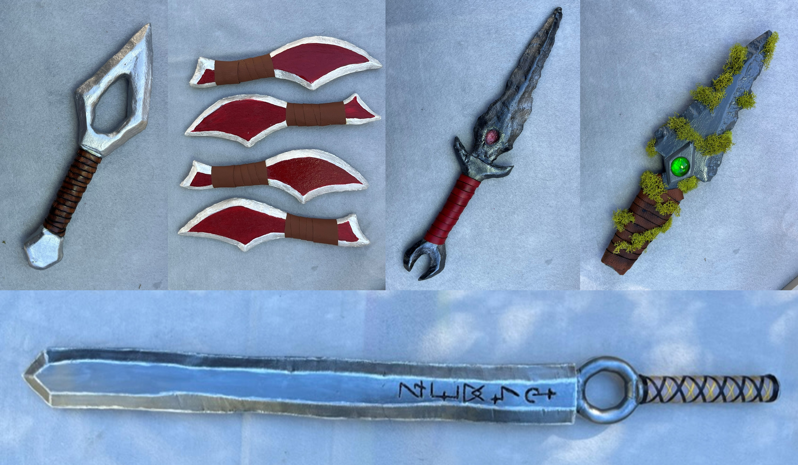
Foam weapons created using EVA foam and paint.
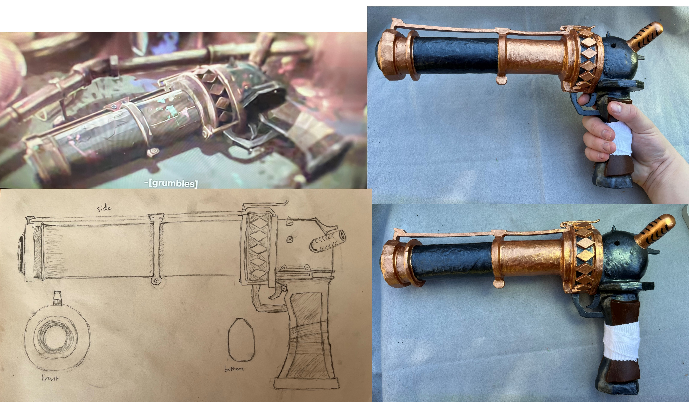
A fake gun created based on a design from the TV show Arcane. Materials include EVA foam and paint.
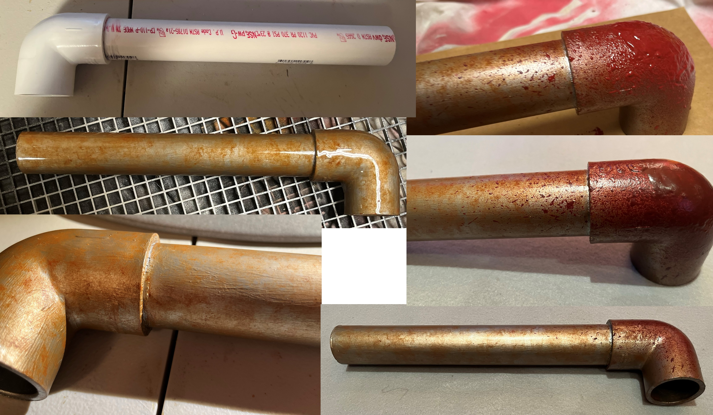